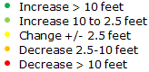
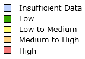

Select Data Type:
Choose Time Period:
Select Year
Select Season
Select Range
(Change in Groundwater Level Only)
Show Data Layers:
Legend:
Measurements
Contours
Color Ramp





CONDITIONS OF USE
The Department of Water Resources respects the privacy rights of those who visit our web sites and use our Internet services. This notice explains our privacy policies and provides notices required by Government Code Section 11015.5. The Department does not use cookies or other devices or databases in order to collect personal information about Internet users. Some of our sites may use cookies to offer faster responses or help customize users' sessions. Like most Internet sites, we do keep standard log records to improve our sites, to provide better information in the future and to be sure we are using resources wisely. These logs may include the user's IP address or system domain name, computer type, browser version, date and time of the visit, names of files requested and the referring page. For Internet users of systems requiring accounts, we may log the above information as well as the departmentally assigned user names. Our logs do not record anyone's Internet user name or email address. In order to respond to user requests, we may ask users for email or postal addresses or other information. Providing this information is entirely voluntary. We also have a responsibility to protect the computing resources of the Department. If we believe someone is trying to break into, has broken into or has otherwise abused our computers over the Internet, we can use the information in our logs to try to find those who are responsible. As part of these efforts we may share the information with law enforcement agencies and others. More information is in the Security notice below. Information in our logs and other records is subject to the limitations set forth in the Information Practices Act of 1977 (Civil Code Section 1798). Except as noted, the Department may not distribute or sell any electronically collected personal information about users to any third party without the permission of the user. Electronically collected personal information is also exempt from requests made pursuant to the California Public Records Act (Government Code Section 6250). Users may request removal of electronically collected personal information as defined in Section 11015.5 of the California Government Code. Such requests should be made to the Chief of Records Imaging and Retrieval, 1416 Ninth Street, Sacramento, CA 95814.SECURITY
This computing system is operated by the State of California and is for official use only. Unauthorized access, unauthorized attempted access, or unauthorized use of any State computing system is a violation of Section 502 of the California Penal Code and/or applicable Federal Law, and may be subject to prosecution. Individuals using this computing system without authority, or in excess of their authority, are subject to having their activities on this system monitored and recorded by system personnel. All http, ftp, telnet and other Internet accesses are logged (see Privacy notice above). In the course of system maintenance, trouble shooting or security investigations, the activities of authorized users may also be logged. These logs are routinely deleted as problems are resolved except when a violation of Section 502 of the California Penal Code is suspected. Anyone using this system expressly consents to such monitoring and is advised that if such monitoring reveals possible evidence of criminal activity, further legal action may be taken.DISCLAIMER
All information provided by the Department of Water Resources on its Web pages and Internet sites, is made available to provide immediate access for the convenience of interested persons. While the Department believes the information to be reliable, human or mechanical error remains a possibility. Therefore, the Department does not guarantee the accuracy, completeness, timeliness, or correct sequencing of the information. Neither the Department of Water Resources nor any of the sources of the information shall be responsible for any errors or omissions, or for the use or results obtained from the use of this information. Other specific cautionary notices may be included on other Web pages maintained by the Department.
Download selected data